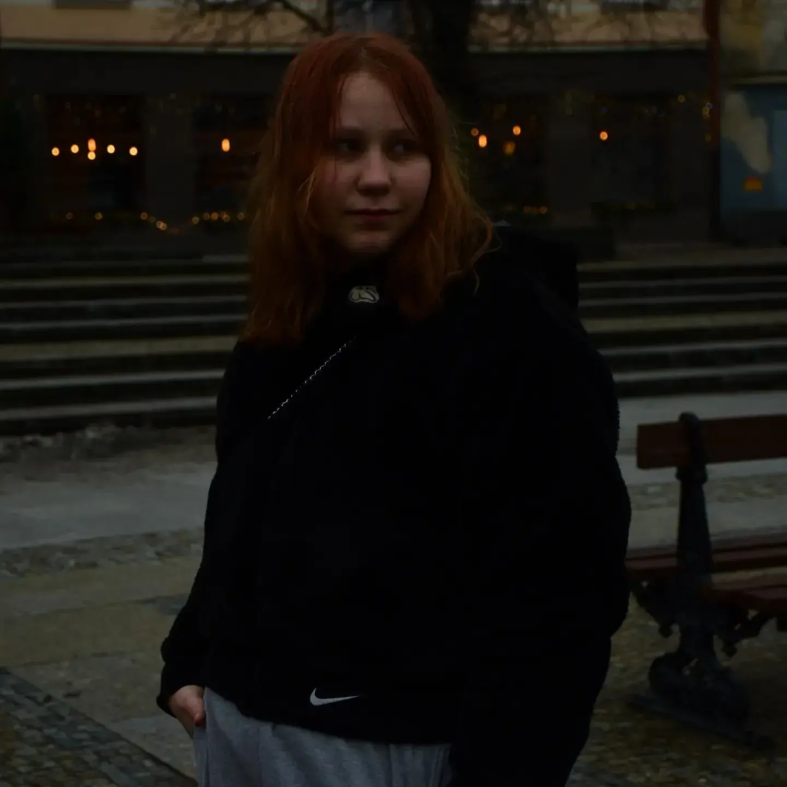

Witajcie! Jestem uczennicą technikum o profilu Fotografa i entuzjastką fotografii od siódmej klasy podstawówki. Moje serce bije w rytmie migawki, a każde zdjęcie to dla mnie opowieść pełna emocji i wyjątkowych chwil.
Specjalizuję się w fotografii portretowej oraz ulicznej, a moje prace emanują atmosferą Dark Mood. Fascynuje mnie gra świateł i cieni, która nadaje moim zdjęciom charakterystyczny nastrój.
Uwielbiam przechwytywać chwile emocji i ukazywać je w sposób, który wyróżnia się spośród innych.
Chociaż fotografia uliczna to moje naturalne środowisko, nie stronię od fotografii studyjnej.
Uwielbiam pracować nad kompozycją, światłem i cieniami, aby stworzyć wyjątkowe portrety, wtedy aparat staje się moim pędzlem, a światłem maluję emocje na fotografii.
Fotografia dla mnie to nie tylko umiejętność, ale również niekończąca się podróż po świecie nowych możliwości i inspiracji. Moje prace można zobaczyć głównie na moim Instagramie gdzie dzielę się najnowszymi sesjami.
Korzystam głównie z aparatów Nikon i Canon, które mam w szkole i które umożliwiają mi precyzyjne uchwycenie każdego detalu i wydobywanie z obrazów głębokich tonów, ale również też korzystam z telefonu.
Niestety obecnie nie dysponuję własnym sprzętem lecz to nie stanowi przeszkody w realizacji moich marzeń, a jednym z nich jest rozpoczęcie sesji dla par i rodzin, aby uwiecznić dla nich ważne chwile i stworzyć zdjęcia pełne miłości i emocji.
Jednocześnie nieustannie rozwijam swoje umiejętności i wiedzę w dziedzinie fotografii. Ciągła nauka, eksperymentowanie z nowymi technikami i śledzenie najnowszych trendów pozwalają mi podnosić jakość mojej pracy. Fotografia dla mnie to nie tylko umiejętność, ale również niekończąca się podróż po świecie nowych możliwości i inspiracji.
A w niej kocham to, jak mogę wyrazić siebie i swoją twórczą wizję. Dla mnie każdy obraz to opowieść, a każda sesja to nowa przygoda, którą chciałabym podzielić się z Wami.
